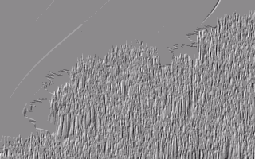
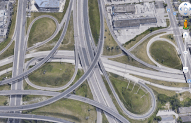

preface
Apologies,,this is really informal
Glossary:
1. Mindfield
- experience
2. Mindfilter
- idea, person or thing that is capable of altering experience in a significant way
I think i make things to make sense of my weird experiences/phenomena that I would have difficulty explaining to someone with words. some of these weird experiences include:
Close Eye Visuals

Subway synesthesia

Sleep paralysis dreams and hallucinations
oh-my-days-Mindfields
People Portals

This is a bad way of explaining it/this is what i mean by 'field compression':
The sentence “I ate a delicious apple.” is a compressed version of “The apple’s skin was crispy. When I bit into it’s flesh, the juice molecules sent sweet signals to my brain. From what I can tell, this taste was pleseant.”
You say “i ate a delicious apple” instead of the latter because it would be ineffective to describe every aspect of eating a delicious apple.
*I am not effective at compressing my thoughts and experiences into words,,, This is why I need to compress them with images, sounds and films.*
Re: Syntax Error Magazine
syntax error is called syntax error because sometimes I speak as if i have not learned syntax,
the images in syntax error are usually images of bad graphic design, packaging and kitschy things
this is all i currently have to say ab my Makes